Pokédex / #320
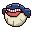
Wailmer #320
Water
It bounces playfully like a ball. The more seawater it swallows, the higher it bounces.
Generation 3 · Hoenn
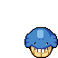
Stats
| Attack | 70 | |
|---|---|---|
| Defense | 35 | |
| Sp. Atk | 70 | |
| Sp. Def | 35 |
In the wild
| Wild level | 20–30 |
|---|---|
| HP | 130 |
| Experience | 5 |
| Egg groups | Field, Water 2 |
Evolution
- Evolves into Wailord at level 40.
Moves
| Level | Move | Type | Category | Power | Energy | Cooldown | Effect | |
|---|---|---|---|---|---|---|---|---|
| 1 | Tackle | Normal | Physical | 15 | 15 | 1s | Tackle is one of the most common and basic moves a Pokemon learns. It deals damage with no additional effects. | |
| 1 | 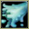 | Splash | Normal | Status | 20 | 20 | 5s | Splash deals damage and has no secondary effect. |
| 4 | 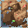 | Growl | Normal | Status | – | 60 | 60s | The user growls in a cute way, making the foe lower its ATTACK. stat. |
| 7 | Water Gun | Water | Special | 40 | 45 | 9s | Water Gun inflicts damage and has no secondary effect. | |
| 10 | Rollout | Rock | Physical | 5 | 70 | 35s | Rollout inflicts damage over five turns and raises the user's Speed by two stages. | |
| 13 | Whirlpool | Water | Special | 35 | 100 | 20s | The user traps the target in a violent swirling whirlpool for four to five turns. | |
| 16 | 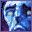 | Astonish | Ghost | Physical | 30 | 30 | 5s | The user attacks the target while shouting in a startling fashion. This may also make the target flinch. |
| 19 | Water Pulse | Water | Special | 60 | 65 | 9s | Water Pulse deals damage and has a 20% chance of confusing the target. | |
| 22 | Mist | Ice | Status | – | 120 | 90s | The user cloaks itself and its allies in a white mist that prevents any of their stats from being lowered. | |
| 25 | 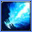 | Brine | Water | Special | 65 | 80 | 15s | Brine inflicts damage, and its power doubles to 130 when the target is at or below 50% health. |
| 29 | 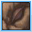 | Rest | Psychic | Status | – | 100 | 180s | User sleeps for 5 seconds, but user is fully healed. |
| 37 | Amnesia | Psychic | Status | – | 75 | 60s | Amnesia raises the user's Special Defense by two stages. | |
| 41 | Dive | Water | Physical | 80 | 100 | 20s | Dive does damage and has no secondary effect. | |
| 45 | 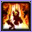 | Bounce | Flying | Physical | 85 | 95 | 18s | Bounce deals damage and has no secondary effect. |
| 49 | 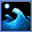 | Hydro Pump | Water | Special | 110 | 120 | 27s | Hydro Pump inflicts damage and has no secondary effect. |
| 53 | 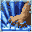 | Heavy Slam | Steel | Physical | 80 | 80 | 12s | Heavy Slam does damage and has no secondary effect. |
Field abilities
SurfDiveWaterfallStrengthRock Smash
Special abilities
Water VeilOblivious
Egg moves
Aqua RingBody SlamClear SmogCurseDefense CurlDouble-EdgeFissureThrashZen Headbutt
Technical machines
BlizzardDouble TeamEarthquakeHailIce BeamProtectRain DanceRestRoarRock TombSubstituteToxic
Drops
| Item | Amount | Chance | |
|---|---|---|---|
| water gem | 1–13 | 97.2% | |
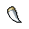 | razor fang | 1–3 | 62.5% |
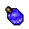 | pot of water | 1 | 35% |
| cutting fang | 1 | 17.5% | |
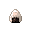 | onigiri | 1–5 | 7.5% |
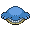 | wailmer doll | 1 | 0.1% |
| Splash Plate | 1 | 0.002% | |
| TM 12 | 1 | 0.001% |